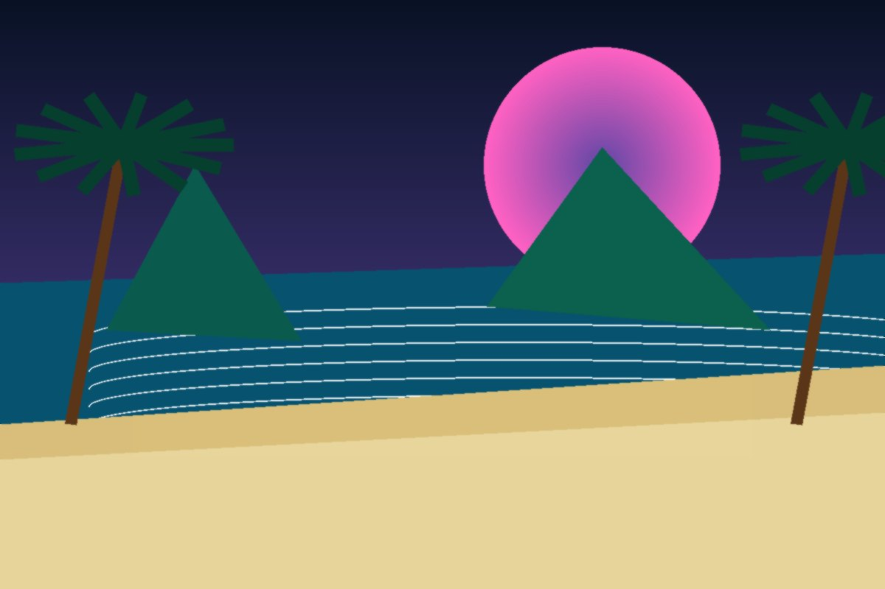
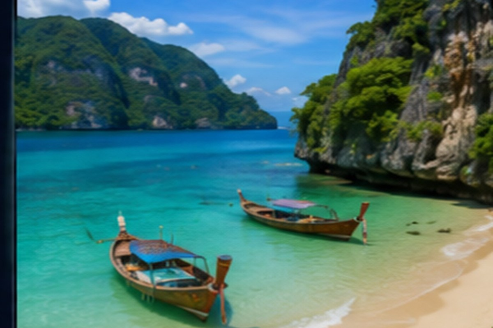
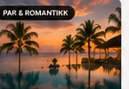
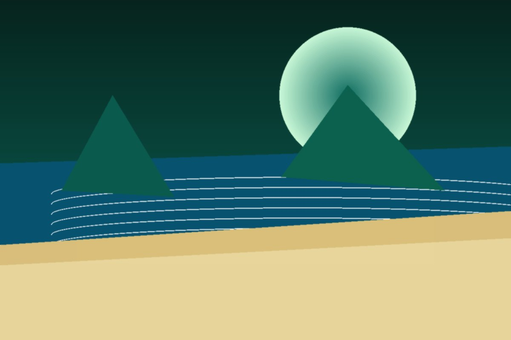
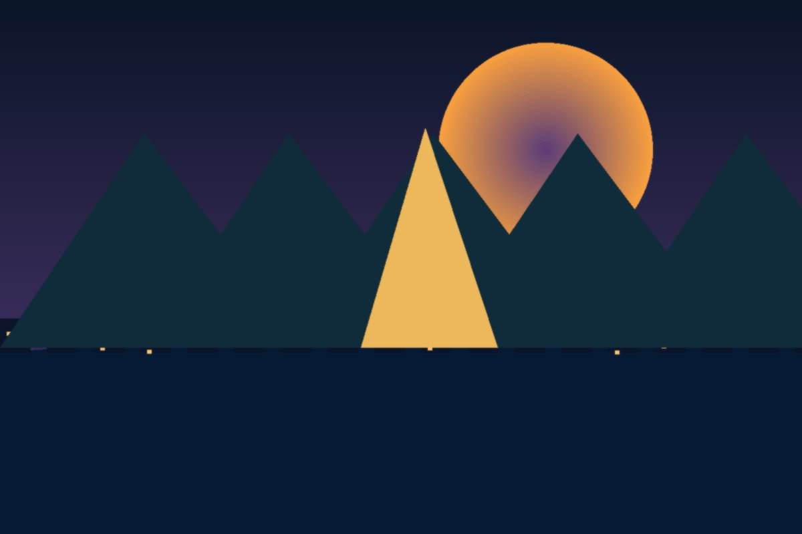

Kata/Karon
tryggere strandvalg for familier og førstegangsreisende.
Strender, beach clubs, øyhopping, familiehoteller og romantiske resortområder.
Phuket er best når siden forklarer forskjellene mellom områdene. Velg Kata/Karon for familie, Kamala/Bang Tao for roligere strandliv og Patong kun hvis natteliv er viktig.
tryggere strandvalg for familier og førstegangsreisende.
roligere, bra for par og familier.
større resorts, strand og komfort.
mer lokalt og avslappet.
Utvalget under er ryddet til kategorier som gjør siden mer nyttig: luksus, familie, backpacker, par, natur og mest for pengene.





Dette gir siden mer magasinpreg og gjør guiden nyttig før hotellvalget.
Legg dette inn som tips i reiseruten, eller koble senere mot Klook/GetYourGuide når affiliate-lenkene er klare.
Legg dette inn som tips i reiseruten, eller koble senere mot Klook/GetYourGuide når affiliate-lenkene er klare.
Legg dette inn som tips i reiseruten, eller koble senere mot Klook/GetYourGuide når affiliate-lenkene er klare.
Legg dette inn som tips i reiseruten, eller koble senere mot Klook/GetYourGuide når affiliate-lenkene er klare.
Legg dette inn som tips i reiseruten, eller koble senere mot Klook/GetYourGuide når affiliate-lenkene er klare.
Phuket blir bedre når guiden også hjelper folk med hva de faktisk bør spise og oppleve på kvelden.
Et enkelt, konkret tips som gjør siden mer personlig og mindre generisk.
Et enkelt, konkret tips som gjør siden mer personlig og mindre generisk.
Et enkelt, konkret tips som gjør siden mer personlig og mindre generisk.
Et enkelt, konkret tips som gjør siden mer personlig og mindre generisk.